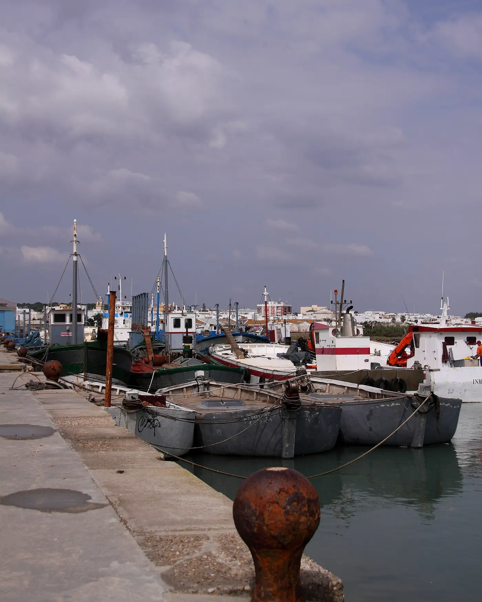
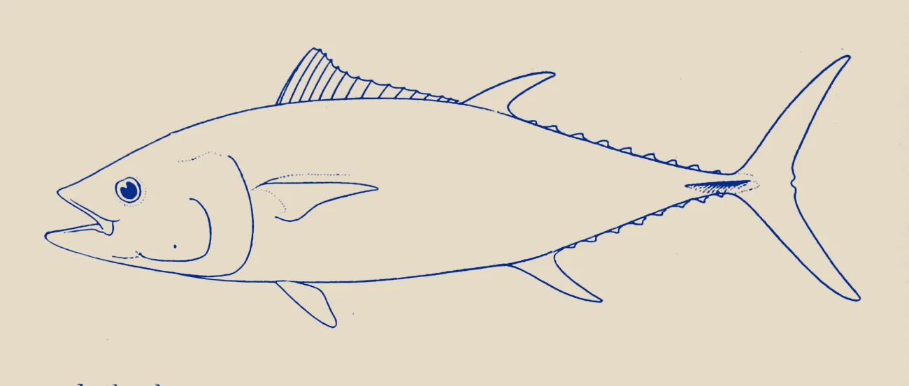

La almadraba
Un laberinto de redes calado frente a la playa que espera al atún rojo cuando cruza el Estrecho. Es como se pesca aquí desde hace siglos, y de ahí sale todo lo que enlatamos.

La temporada
En primavera el atún rojo entra del Atlántico al Mediterráneo para desovar. Es el atún «de derecho»: llega gordo y con la carne en su mejor punto. Solo compramos ese.
Abril
Se calan las redes y se fondean las anclas.
Mayo
Levantás casi cada mañana, si el levante deja.
Junio
Las últimas levantás y se cierra la cocina.
Julio
Vuelve el atún «de revés», más flaco. No lo enlatamos.
Semana de pesca y cocinaSin pesca
Cómo se pesca
Vista desde arriba, la almadraba es una pared de red que corta el paso al atún y lo lleva hacia unas cámaras cerradas. La última es el copo.
Calar
En abril se fondean cientos de anclas y se tienden las redes, que bajan desde los corchos de la superficie hasta el fondo. Se tarda unas tres semanas.
Esperar
El atún nada pegado a la costa. Al encontrar la rabera, la sigue y entra en el cuadro. De cámara en cámara acaba en el copo, el único tramo con suelo de red.
La levantá
Al alba, las barcas rodean el copo en cuadro y los pescadores suben el suelo de red a mano hasta que los atunes quedan a la vista. Se eligen uno a uno: los pequeños se sueltan.
A tierra
Los atunes llegan enteros y en hielo al muelle. Desde ahí hasta nuestra cocina hay menos de una hora.

El ronqueo
Así se llama el despiece del atún. El nombre viene del ruido del cuchillo al rozar la espina, que suena como un ronquido.
Morrillo
La carne que cubre la parte alta de la cabeza, sobre la nuca. Jugosa y oscura.
Contramormo
Una pieza pequeña justo debajo del morrillo. Sale poca de cada atún.
Parpatana
La unión entre la cabeza y los lomos, junto a la aleta. Mucho hueso y una carne muy sabrosa; mejor a la brasa que en lata.
Facera
La carrillada del atún, en la cara. Se guisa; no la enlatamos.
Ventresca
La barriga, la parte más grasa. Es la lata más cara y la que antes se acaba.
Tarantelo
La pieza en triángulo entre la ventresca y la cola. Grasa media y fibra fina.
Lomo alto
También llamado lomo negro. Recorre la espalda; magro y firme.
Lomo blanco
El lomo bajo, encima de la barriga. Más tierno que el alto.

Cuatro almadrabas
En la costa de Cádiz se calan hoy cuatro, de norte a sur. Nosotros compramos en la de Zahara, la que vemos desde la fábrica.
- ConilLa más al norte, frente a la costa de Conil de la Frontera.
- BarbateSu puerto es uno de los lugares de la provincia donde más se habla de atún.
- Zahara de los AtunesEl pueblo lleva el atún en el nombre. Su castillo se levantó para guardar la almadraba.
- TarifaLa última antes del Estrecho, donde el Atlántico se encuentra con el Mediterráneo.
